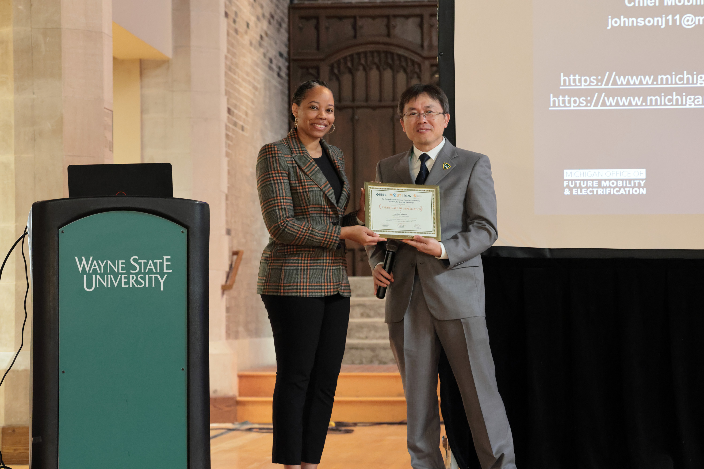
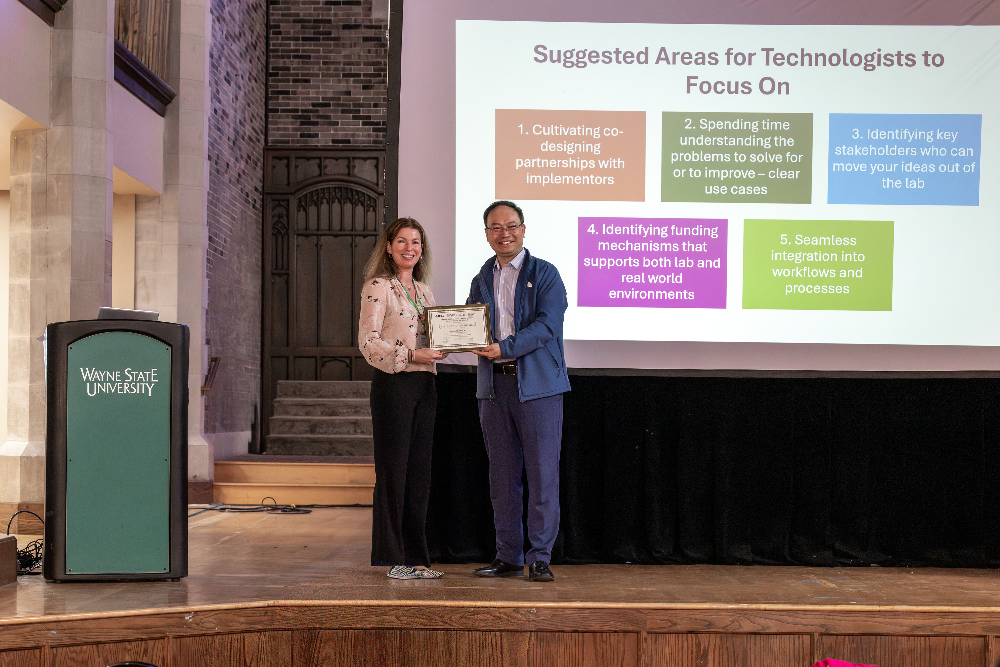
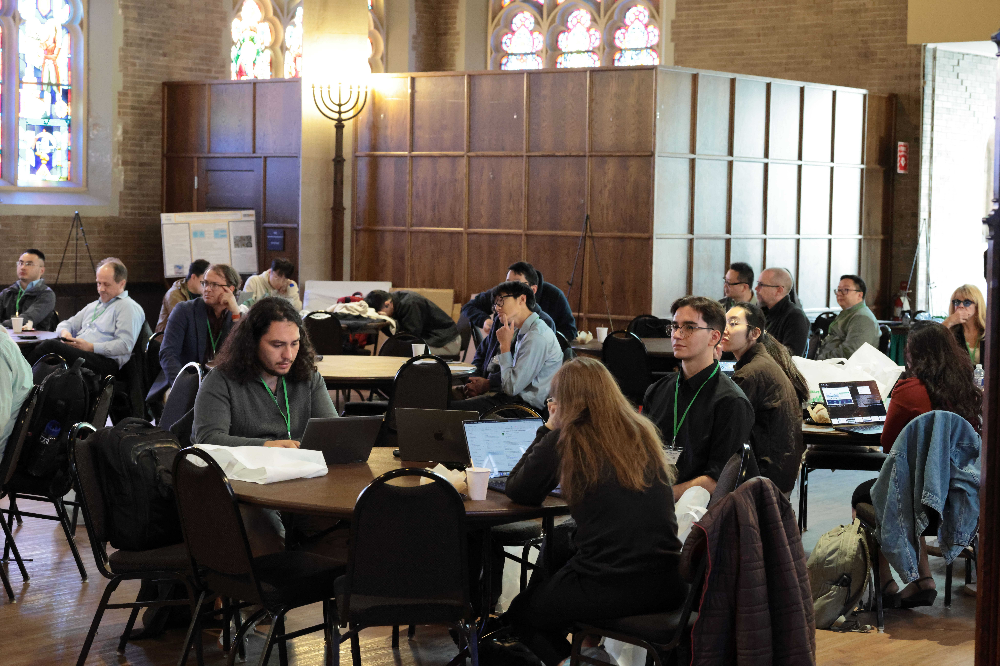

Agenda Overview
| Start Time | Monday (May 04) | Tuesday (May 05) | Wednesday (May 06 - PISA workshop) |
|---|---|---|---|
| 8:00 AM | Registration Open & Breakfast | Registration Open & Breakfast | Registration Open & Breakfast |
| 8:45 AM | Opening Remarks | Registration Open & Breakfast | Opening Remarks |
| 9:00 AM | Keynote #1: Michigan Mobility Outlook: Strategies for a Connected Future |
Keynote #2: Out of the Lab and Into the Wild: Studying the Implementation of Collaborative Robots in Healthcare |
Keynote #3 |
| 10:00 AM | coffee break | coffee break | coffee break |
| 10:30 AM | Paper Session 1:Multimodal Perception | Paper Session 4: Robust Autonomous Driving | PISA paper session 1: Systems and Algorithmic Methods |
| 12:10 PM | lunch | lunch | lunch |
| 13:30 PM | Paper Session 2: AI for Autonomous Systems | Panel Discussion: It’s 2026 - Is Autonomous Driving Research Still Relevant? |
PISA paper session 2: Applications and Real-World Deployment |
| 3:00 PM | coffee break | coffee break | coffee break |
| 3:30 PM | Paper Session 3: Smart Traffic and Mobility | Paper Session 5: Safety and Security | Autoware tutorials & Demos on Physical AI |
| 5:00 PM | Posters/Demos | Posters/Demos | Adjourn |
| 6:00 PM | Dinner and Award Ceremony | Dinner |
Program
Opening Remarks
Ned Staebler, Vice President for Economic Development, Wayne State University
Ali Abolmaali, Dean, James and Patricia Anderson College of Engineering, Wayne State University
Keynote #1: Title: Michigan Mobility Outlook: Strategies for a Connected Future
Keynote Speaker: Justine Johnson (Chief Mobility Officer, State of Michigan)
Chair: Caisheng Wang (Wayne State University)
Paper Session 1: Multimodal Perception
Session Chair: Sidi Lu (William & Mary)
- Modeling and Measuring Redundancy in Multisource Multimodal Data for Autonomous Driving
- Fusion of Heterogeneous and Multi-Location Sensors for Collective Perception
- Topographical Density Mapping: A Novel Density-Based Clustering Algorithm for Automotive Radar Applications
- An LLM-based Waterway Scheduling Agent Integrated with Semantic Perception and Evolutionary Optimization
Paper Session 2: AI for Autonomous Systems
Session Chair: Kewei Sha (University of North Texas)
- LightAD: A Lightweight Vision-Based Autonomous Driving System
- Log What Matters: Safety-Aware Adaptive Logging for CAVs in Dynamic Conditions
- LaViCoN: Language and Vision Cooperative Navigation for Assistive Mobile Robots
- SCARF-SLAM: Spatially Confidence-Aware Aggregation for Federated Implicit Neural SLAM
Paper Session 3: Smart Traffic and Mobility
Session Chair: Lanyu Xu (Oakland University)
- BRIDGE: Task-Aware LiDAR Point Cloud Compression with Optimal Detection-Critical Subset Learning
- AI-Assisted Driver Situational Awareness for Improved Traffic Flow at High Density Intersections
- Cost of convenience in long-dwell public electric vehicle charging
- Can I Park Here? Understanding Complicated Parking Signs on the Street
Keynote #2: Title: Out of the Lab and Into the Wild: Studying the Implementation of Collaborative Robots in Healthcare
Keynote Speaker: Susan Smith (Director of Technology Research & Education, ChristianaCare)
Chair: Weisong Shi (University of Delaware)
Session 4: Autonomous Driving Systems
Session Chair: Song Fu (University of North Texas)
- Computation–Accuracy Trade-Off in Service-Oriented Model-Based Control
- Toward Robust Autonomous Driving in Rural and Off-Road Environments: A Perception Based Approach
- User Diversity in Advanced Driving System's Design and Validation: Empirical Insights for Parking Assistance Systems
- An Explainable Deep Learning-based Intrusion Detection Framework for Smart Mobility
Panel Discussion: It’s 2026 - Is Autonomous Driving Research Still Relevant?
Moderator: Weisong Shi (University of Delaware)
Panelists: Tony G. Geara (Former Deputy Chief of Mobility Inovation, City of Detroit)
Ziran Wang (Assistant Professor, Purdue University)
Jeff White (Chief Architect – Office of the CTO, Ernst and Young LLP)
Dalong Li (Sr. Applied Scientist, Samsara)
Simon Thompson (Director of Engineering, Research, at TIER IV)
Wende Zhang (Director - ADAS Sensors and Sensing Systems at General Motors)
Paper Session 5: Safety and Security
Session Chair: Xinghui Zhao (Washington state university)
- Secure-BSM: Blockchain-Assisted Collaborative Misbehavior Detection in Vehicular Networks
- A Reproducible, Data-Driven Framework for Safety and Functionality Verification of Level-4 Automated Buses Through Real-World Testing
- Infrastructure-Guided Connectivity-Enhanced Road Crack Detection and Estimation
Posters/Demos
- Poster: Ad-hoc Route Navigation For Autonomous Vehicles Phase I: A Depth Camera Approach
- Poster: MAPLE: Multi-session Anchor-based Point cloud Loop-closure for Efficient Merging
- Poster: Development of a Kinematic Model for Physical Electric Regenerative Braking System
- Poster: Development of Smart Solar Tracking Algorithm Using Simulation
- Poster: Centralized MLOPs Platform for Software Defined Vehicles
- Poster: Customized RISC-V SoC Design via Instruction Set Reduction Towards Cartographer
- Demo: Multi-Location Sensor Fusion for Enhanced Situational Awareness
- Demo: Deploying Maneuver Coordination System in Real-Life Autonomous Driving Scenarios
PISA Workshop Paper Session 1: Systems and Algorithmic Methods
Session Chair: Chuchu Chen (George Washington University)
- RL-Enabled LoS Blockage Avoidance for Visible Light Robot Localization
- MAPLE: Multi-session Anchor-based Point Cloud Closure for Efficient Merging
- Runtime Learning of Quadruped Robots in Wild Environments
PISA Workshop Paper Session 2: Applications and Real-World Deployment
Session Chair: Chuchu Chen (George Washington University)
- TinyLite: Efficient Edge Intelligence for Real-Time Spam Detection Under Device Constraints
- DaVoS: An Instantaneous Safety Model for Autonomous Vehicles
- The On-Robot Computing Needs for Embodied AI